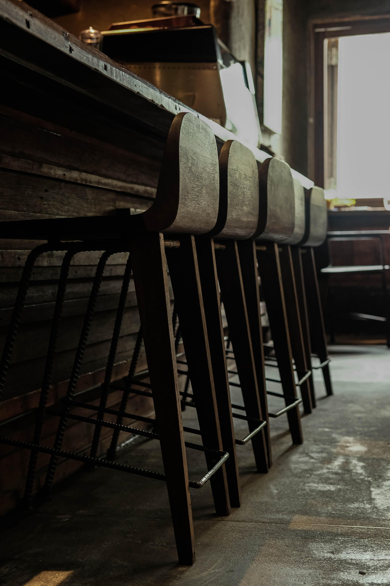
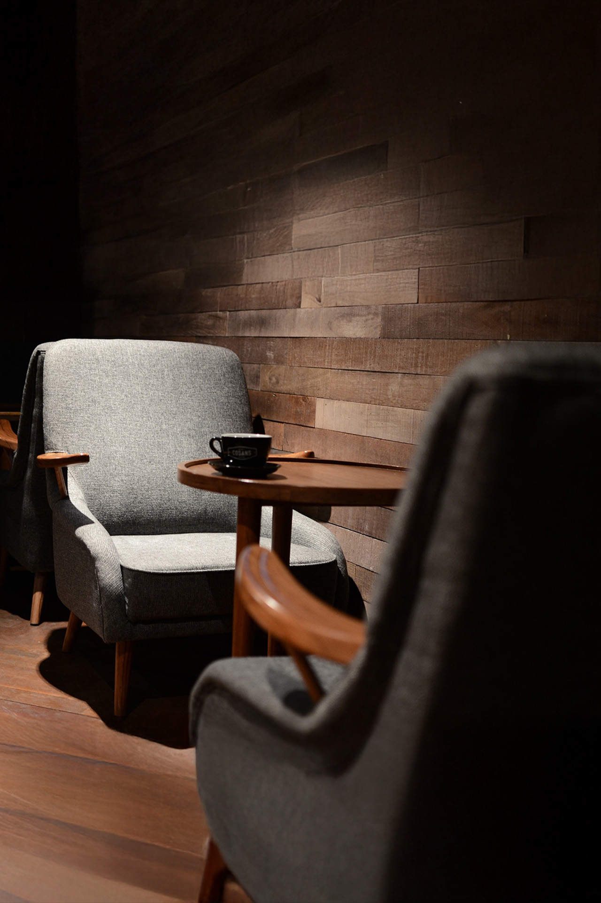

COFFEE, EVERYWHERE.
忙しい日常に、
ほっとひと息の香りを。
コーヒーが持つ深い味わいを、
料理やスイーツにも添えて。
大人がくつろぐための、
静かなカフェへようこそ。
Concept
コーヒーの香りに包まれた、穏やかな時間を届けたい。
なぜコーヒーにこだわるのか
コーヒーは、日々を豊かにする小さな芸術だと私たちは考えています。
焙煎の深さ、香りの立ち方、温度や時間——。
そのわずかな違いで、味も印象もまるで変わる。
その繊細さに惹かれ、私たちは“豆”と向き合い続けています。
全メニューにコーヒーを使う理由
コーヒーの魅力は、苦味や香ばしさだけではありません。ほんの少し加えるだけで、甘さは引き立ち、香りに奥行きが生まれる。
一杯のコーヒーのように、すべてのメニューが“香りの記憶”を残してくれることを願っています。
店主のメッセージ・ストーリー
学生のころ、夜の喫茶店で飲んだ苦い一杯の味が心に残りました。
あの“静かな時間”をいつか自分の手でつくりたいという想いから、この店が生まれました。
コーヒーを通して「日常の中の小さな安らぎ」を届けることができたら嬉しいです。
店主より。
遠い国の高原で摘まれた豆が、
焙煎の炎をくぐり、香りを纏って、ここへ届く。
その旅の終わりが、一杯のカップ。
あなたの手の中に、
世界が香る瞬間を届けたい。
Gallery
深い香りが漂う空間で、
時間はゆっくりと流れます。
木の温もりとコーヒーの香ばしさが、
心を静かに包み込む。
丁寧に抽出される一杯が
今日の時間をゆっくりと深めていきます。


あなたも、この空間で一杯の香りを。
Access
あなたの一杯が、ここでお待ちしています。
COFFEE Atelier Kuro
東京都渋谷区代々木1-2-3 Atelierビル 1F
営業時間：10:00～20:00（L.O.19:30）
定休日：火曜日
電話番号：03-1234-5678
代々木駅より徒歩3分